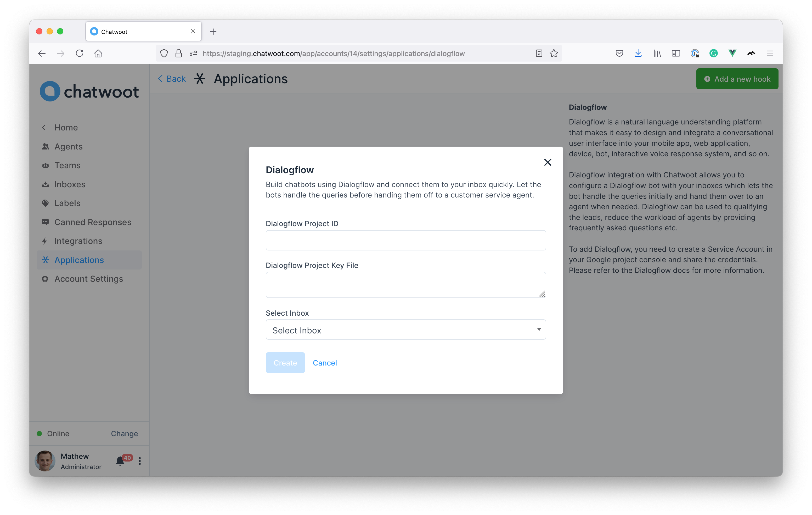
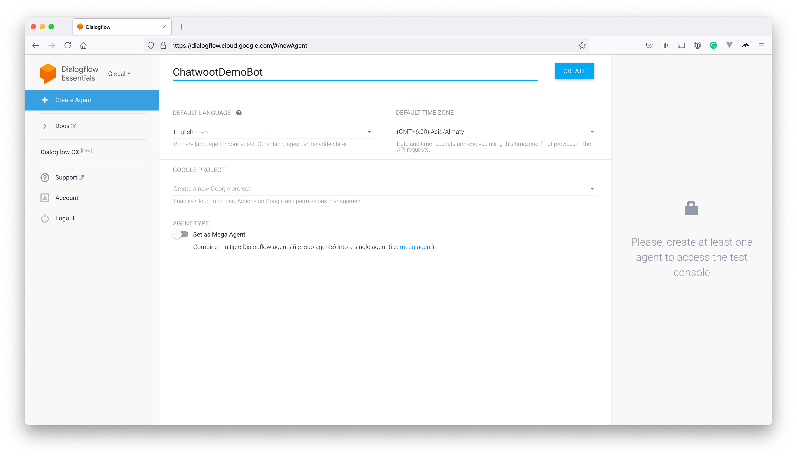
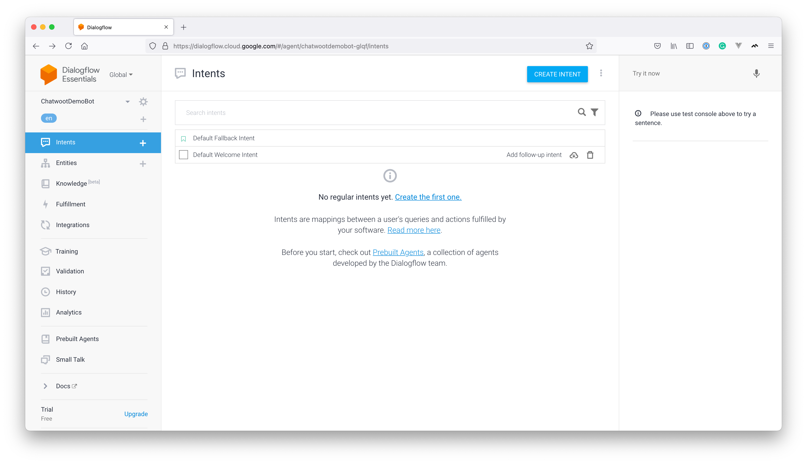
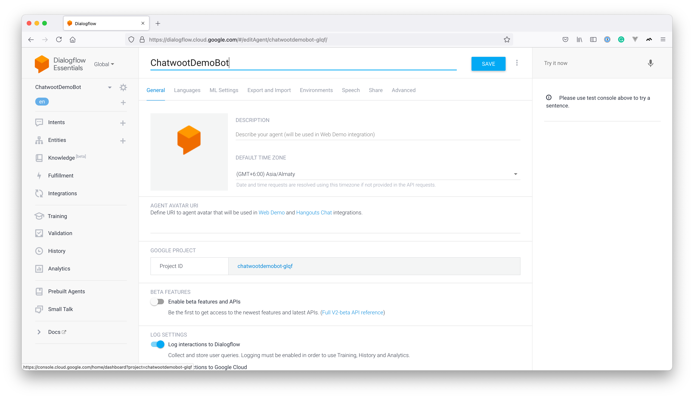
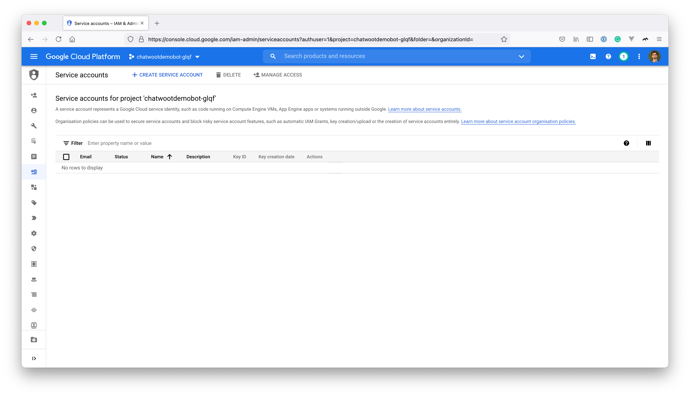
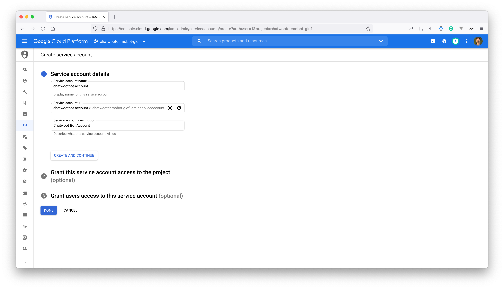
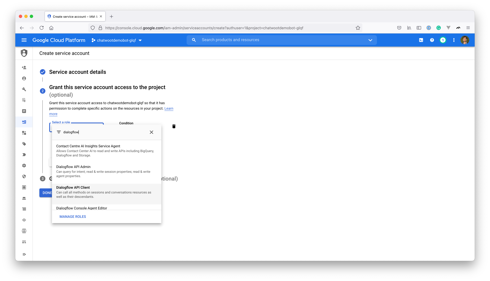
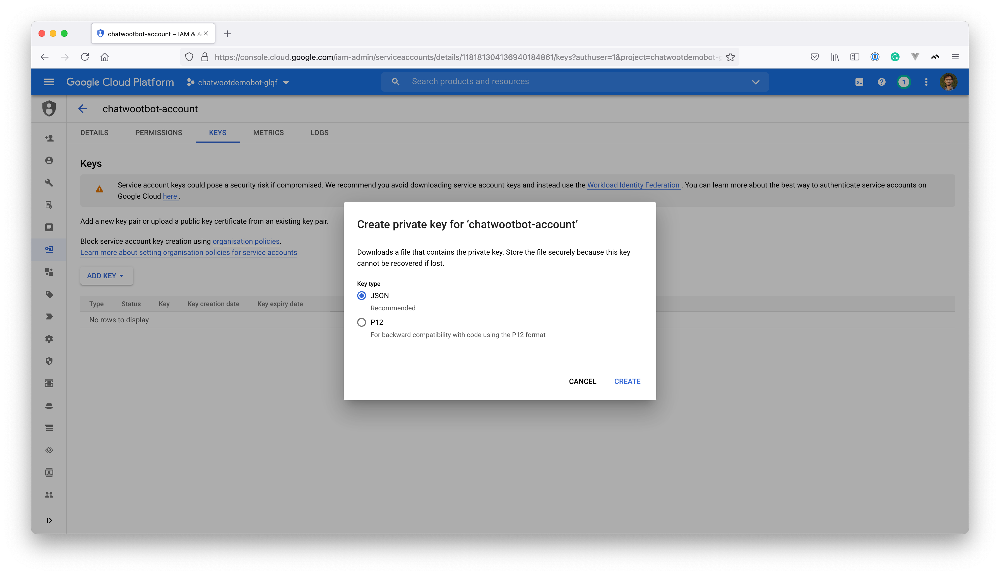
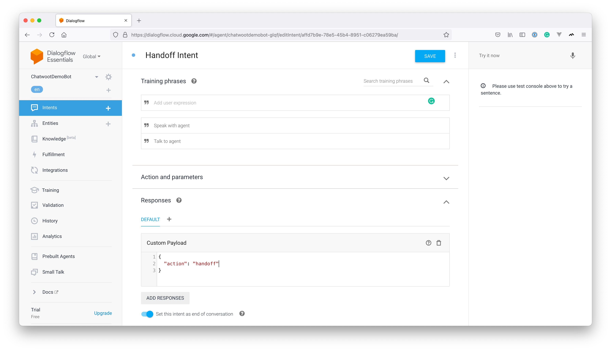

Integrate Chatwoot with Dialogflow
Chatbots are an essential part of every customer service platform. If you have many conversations happening in your account, scaling human support might not be effective. You could deploy a chatbot that helps answer trivial questions and hand it off to an agent only when necessary. Dialogflow and Rasa.ai are the top-rated NLP platforms that allow you to build a bot based on your use case. In this article, we will see how you can configure a Dialogflow chatbot with Chatwoot.
Configuring Dialogflow Integration in Chatwoot
Note: This step requires a Dialogflow Bot. If you haven't configured that already, follow the Creating a Dialogflow Bot Section first.
Chatwoot has a native Dialogflow integration. Go to "Settings -> Applications -> Dialogflow". Click on "Configure", you will see a button to "Add a new hook".
You need to add "Project ID", "Project Key file", and an inbox to create a hook. (Copy the contents of the key file downloaded earlier and paste it in the text area)

Voila! The integration is complete.
Test out the website inbox to see if the initial query is handled by the bot or not.
Creating a Dialogflow bot
The following section guides you through creating a Dialoflow bot for Chatwoot.
Create a new agent
Go to Dialogflow Console. We will be using Dialogflow Essentials for this article. Click on "Create new agent". It would show options as shown below.

Create intents
You will need to create intents based on how you want your bot to respond. There will be 2 default intents in the project called "Default Fallback Intent" and "Default Welcome Intent", as shown below

Now a basic bot configuration is complete, let us create a service account and connect it with Chatwoot.
You can also create additional intents for your specific use cases.
Chatwoot also supports advanced intents that enables agent handoff, interactive messages etc.
refer: Advanced Intents
Create a service account
To connect this bot with Chatwoot, you need to create a service account on your Google Cloud console. Navigate to the project console in Google cloud by clicking on the Project ID in the project settings below.

Navigate to IAM & Admin -> Service Accounts. You will see a view like the one below. Click on "Create Service Account".

Provide a Service Account name and description as shown below.

To provide access, select Dialogflow API Client from the dropdown.

Continue and click on "Done". Now, you would be able to see the service listed in the dashboard. The next step is to create a key so that it can be shared with Chatwoot. Click on the service account and click on the "Keys" tab. Then, click on "Add Key". You will be able to see a screen like the one below.

Click on "JSON" and click on "Create". It would generate a key for your service account, download the key and save it for use later.
Advanced Intents
Creating a handoff intent
Once the user requests to talk to the agent, Dialogflow needs to inform Chatwoot that an agent can now take over the conversation.
Create an intent named "Handoff Intent" with training phrases like "Talk to an agent" or "Speak with an agent", etc. To handle the handoff intent, we will create a "Custom Payload" response as shown below.
{
"action": "handoff"
}

Upon triggering an intent with the above payload, Chatwoot will toggle the status of the conversation to open and hands it off to an agent.
Interactive Messages
Note: Interactive messages are supported only in website channel at the moment
Chatwoot dialogflow integration also supports interactive messages. The following types of interactive messages are supported:
Creating an interactive message Intent
You can create other interactive messages by changing the payload as mentioned in interactive messages documentation.
Create an intent with required training phrases and a "Custom Payload" response as shown below for an options message.
## example for an options interactive message
{
"content_type": "input_select",
"content": "Select your favorite food from below",
"content_attributes": {
"items": [
{
"value": "I like sushi",
"title": "Sushi"
},
{
"title": "Biryani",
"value": "I like biryani"
},
{
"title": "Pizza",
"value": "I like pizza"
}
]
},
"private": false
}
When user interactes with the input messages. The value they selected is sent back to dialogflow, So that you configure a follow up intent if required.
Example: Configure an intent with training phrase "I like biryani" for the cases where the contact select the option "biryani".
FAQ
How can an agent transfer the conversation back to dialoflow bot?
When the dialoflow bot is connected to an inbox, conversations are created with pending status instead of open. This lets the intial triaging to happen via
the bot before the conversation is passed on to an agent. When handoff happens, the conversation status is changed into open and the bot stops
responding to it.
Sometimes the agents would want to push back a conversation which was handed off, back again into the bot queue. They can do this by changing the conversation status back to pending again so that the bot will start responding to that conversation again.